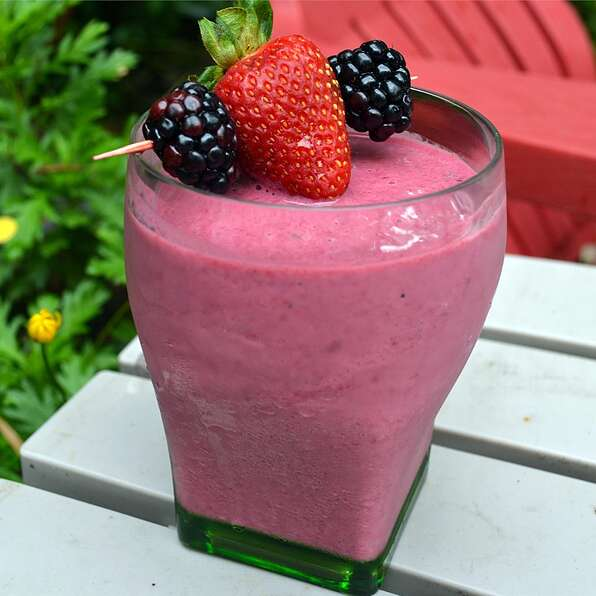

Raspberry Blackberry Smoothie

This delicious recipe brings together several succulent types of berries
into one delicious smoothie. The berries provide antioxidants, a key part
of fighting off disease and the effects of aging. It's quick, it's easy,
and it's delicious!
Ingredients
- 1 small banana
- 1/2 cup blackberries
- 1 cup fresh raspberries
- 1 small container vanilla yogurt
- 1 tablespoon honey
- 4 ice cubes
Steps
- Place banana, blackberries, raspberries, yogurt, honey, and ice cubes
into a blender.
- Blend until smooth.